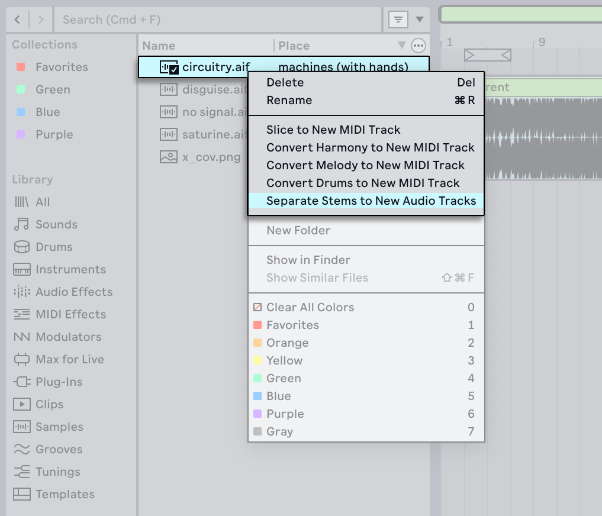
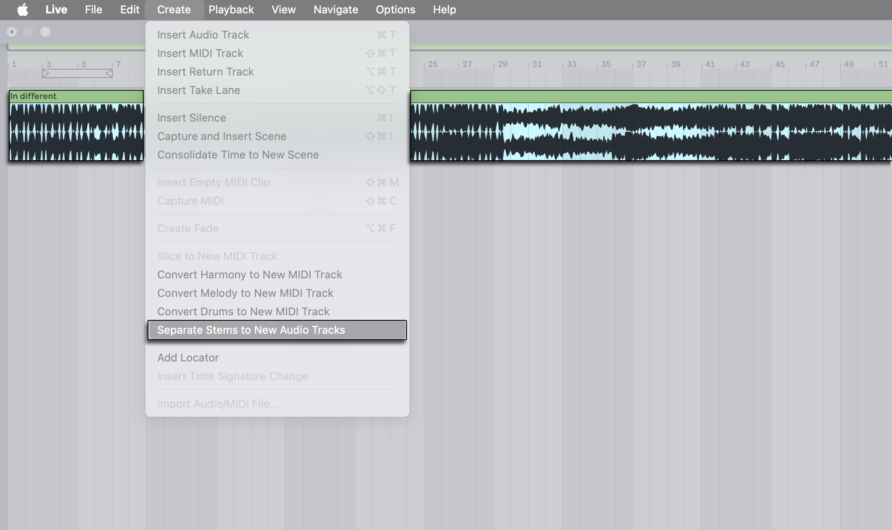
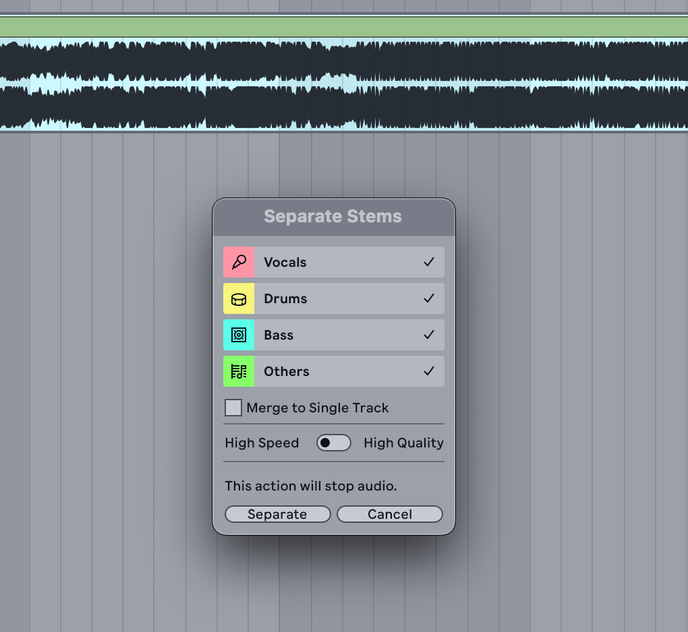
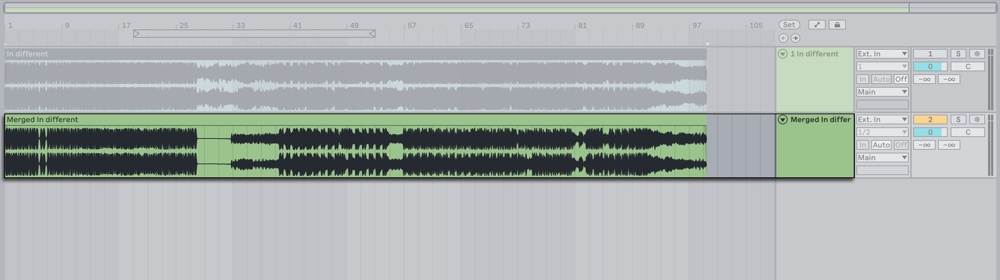
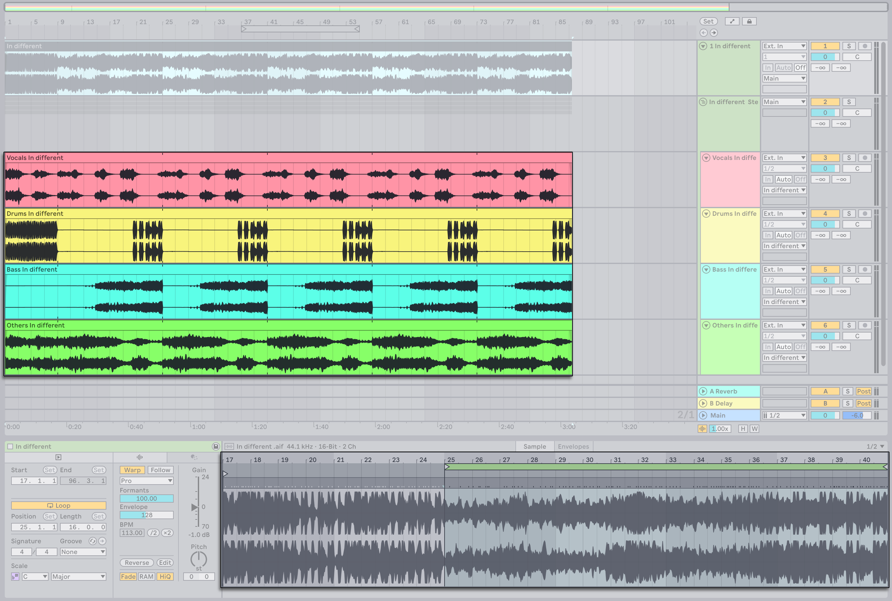

22. Stem Separation
With Live’s built-in stem separation, you can easily extract the main elements of any recorded audio material — such as a song, loop, or sample — into individual parts. Stems can be treated like any other audio clip: you can warp, chop, and rearrange them, as well as process them using effects.
Separating a multi-layered audio recording into stems can be useful for a variety of creative applications. You can isolate vocals for remixes or mashups, deconstruct melodies and rhythms, extract individual instruments for samples, blend stems for DJ mixes, and more.
22.1 How Stem Separation Works in Live
Stem separation, also called music source separation, analyzes the spectral and temporal characteristics of an audio signal and extracts the detected components into parts, which are referred to as stems.
In Live, this process uses a deep learning model specifically trained for source separation, which has been optimized for local use. This means you can extract stems directly within Live without being connected to the internet or needing to install any other external tools.
Any mono or stereo audio file can be separated into four stems: Vocals, Drums, Bass, and Others. The Others stem contains all parts of the audio that are not detected as vocals, drums, or bass.
Throughout this chapter, we refer to creating stems for songs as an example, but keep in mind you can use stem separation with any recorded audio material.
22.2 Separating Audio Files and Clips
You can separate audio files from the browser or separate audio clips from the Session or Arrangement View using the Separate Stems to New Audio Tracks command in the context menu or the Create menu.


Once the command has been selected, a dialog appears containing different options for the separation process.

Use the Vocals, Drums, Bass, and Others toggles to determine which elements of the song are included in the separation.
When separating only a few elements, you can merge the resulting stems by enabling the Merge to Single Track checkbox. This combines the selected parts into a single stem after the separation process. Note that it is only possible to merge two or three elements, and the checkbox cannot be activated if only one or all four are selected.

Choose whether you want the separation process to be based on speed or quality using the quality mode selector. You may want to use High Speed mode for quick drafts and edits, or use High Quality mode when more detailed results are needed.
Click the Separate button to proceed with the process. Note that if playback is running, it will stop once the stem separation begins.
Each resulting stem is added as a clip on its own track in a new Group Track. The stem clips and tracks use the corresponding colors from the toggles in the stem separation dialog, while the Group Track uses the source clip’s track color.

If you only separate one part of the song, such as the vocals, a single track containing the stem clip is created instead of a Group Track.
When using the Merge to Single Track option, the resulting stem is added to a new track, and that track and the stem clip use the source track’s color.

When separating a clip from the Arrangement or Session View, certain clip settings can affect which portion of the audio is processed. If you adjust a clip’s start and end markers in the Clip View before running the separation, only the audible region defined by those markers is included in the resulting stems. Similarly, if you loop a warped clip, only the audio from the start marker through the active loop region is processed.

You can also separate the audio for a time selection within an Arrangement clip. To do so, make a time selection within a clip in the Arrangement View, then right-click the clip and select Separate Stems for Time Selection. This opens the same Separate Stems dialog as described above. Once you click Separate, the clip is split at the edges of the selection and stems are created for only that portion of the audio.

Any audio effects from the source track are added to the Group Track rather than applied to the processed stem audio itself. Additionally, track automation is copied to the new Group Track, while clip envelope automation and modulation are copied to the individual stem clips.
Once the stems are created, the source clip is deactivated to avoid doubled output. If you want to reactivate it, select the clip and then press the 0 key.
When using the Separate Stems to New Audio Tracks command for a song or sample in the browser, the resulting stems are added to the Session or Arrangement View, depending on which view is in focus. If the Set is empty, the project tempo is updated to match the tempo of the source audio when warping for samples is enabled in Live’s Record, Warp & Launch Settings.
The audio files for separated stems are stored in the Current Project folder under Samples → Processed → Stems. If the Merge to Single Track option was used, files are created for each individual stem along with the file for the merged stem. Separated stems are created using the file type selected in the Record, Warp & Launch Settings. They have a 44.1 kHz sample rate and the same bit depth as the source material.
22.2.1 Separation Speed vs. Quality
In the Separate Stems dialog, you can choose between two quality modes: High Speed and High Quality. The mode determines whether the separation process prioritizes quickness or accuracy.
When set to High Speed, the process will be faster, though it may still take several minutes on older system configurations. In this mode, all stems are separated in a single pass.
When set to High Quality, the separation accuracy is improved, as measured by a higher Signal-to-Distortion Ratio (SDR) score, at the cost of slower processing. In this mode, the Vocals, Drums, and Bass elements are processed through their own dedicated separation passes. The Others stem is then created from the remaining audio after the three passes.
With either mode, you can reduce the processing time by cropping the sample before running the separation. If you only want the stems from a certain section of a song, such as the chorus, you can shorten the clip to the desired area using the Crop Clip Sample to Time Selection command in the Sample Editor. You can also crop a clip from a time selection in the Arrangement using the Crop Clip command in a track’s context menu. The corresponding shortcut for both Crop commands is CtrlShiftJ (Win) / CmdShiftJ (Mac).
With High Quality mode, you can shorten the processing time by separating only the stems you need. If you know you want to isolate the drums and vocals from a song, there is no need to create all stems. However, the separation time is not reduced if the Others element is included. In that case, all parts must still be processed so that the remaining audio can be accurately separated. For example, if you separate Vocals and Others, the Drums and Bass stems must also be created. Only the Vocals and Others stems are added to the Set, while the Drums and Bass stems are stored in the Stems folder within the Current Project.
Generally speaking, the amount of time required for the separation highly depends on your system configuration. Stem separation may take a while on older Windows computers and Intel Macs because only the CPU is utilized, not the GPU as on Macs with Apple silicon.
Due to the nature of the separation process, you may occasionally notice that certain elements of the audio end up in stems you didn’t expect. The high frequencies from hi-hats may be audible in the Others stem, or you may hear synth sounds with chorus effects in the Vocals stem. This kind of overlap between stems can happen for a variety of reasons, including the quality mode used and the tonal characteristics of the source material. Depending on how you want to use the stems, you can try separating a song using High Speed mode and then running the process again with High Quality mode to see which results work best with the source material.